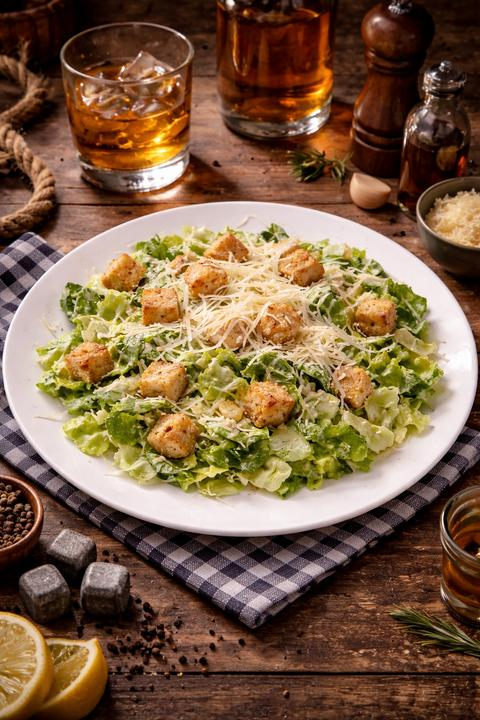

🥗 Салаты
Цезарь
Курица, лист салата, лист айсберг, яйца перепелинные, помидоры черри, сыр пармезан, соус Цезарь
3500 ₸
Салат Греческий
Помидоры, огурцы, фетакса, перец болгарский, оливки, греческий соус, лук красный, грецский орех, соль
2750 ₸Салат c рваной кониной
Томленная рваная конина, лист салата, лист айсберга, черри, корнишоны, редис, лук красный, куриное яйцо, соус цезарь, соль, перец
2990 ₸Хрустящие баклажаны
Лист салата, лист айсберга, фета, помидор, соус счит чили, жаленный баклажан, кинза, грецкий орех
3190 ₸🍲 Супы
Чечевичный Крем-суп
Чечевица, картофель, сливки, лук репчатый, морковь, томатная паста, грецкий орех
1690 ₸Солянка
Говядина, ветчина, куринная грудка, охотнничьи колбаски, лук репчатый, маринованые огурцы, томатная паста, маслины, сметана,
2350 ₸Суп лапша
Яичная лапша, лук репчатый, морковь, курица отворная
1690 ₸🍝 Горячие блюда
Конина в сливочном
Конина, сливки, лук репчатый, картофельные дольки, пармезан, микрозелень, редис,
3600 ₸Феттучини с курицей
Курица, сливки, грибы шампиньоны, пармезан, феттучини, микрозелень
3350 ₸Спагетти неаполитано
Спагетти, курица, грибы шитаки, грибы шампиньоны, паста том ям, сливки, микрозелень
3300 ₸Куырдак
конина, лук репчатый, перечь говяжья, лепешка, маринованый лук
3100 ₸🍕 Пицца
Сырный цыпленок
Томатный соус, курица, помидор, сырный соус, жареный лук, орегано
3590 ₸Пепперони
Томатный соус, сыр моцарелла, пепперони
2900 ₸С томленой кониной
Томатный соус, сыр моцарелла, томленая конина, курт, орегано
3890 ₸🌯 Донеры
Донер Классический
Лаваш, мясо куриное, капуста, огурец, помидор, фирменый белый соус
1790/2290 ₸Донер с кониной
Лаваш, томленная конина, фри, корнишоны, мвринованый красный лук, фирменый белый соус
2290/2790 ₸Донер в батоне
Батон, мясо куриное, помидор, огурцы, капуста, фирменый белый соус
1990 ₸☕ Напитки
Капучино
Классический кофе с нежной молочной пеной
1200 ₸